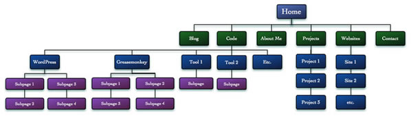
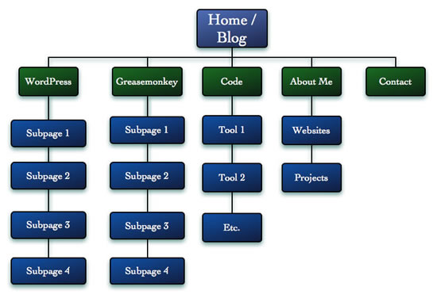
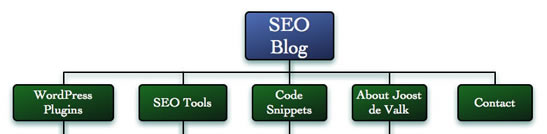
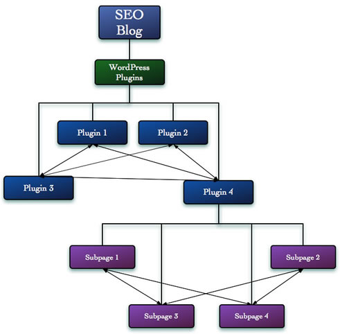

Intelligent site structure for better SEO!
Search engines are one of the most important traffic drivers to sites these days, which is why Search Engine Optimization (SEO) is becoming more and more important.
SEO is often thought to be just a set of some technical tricks, and as a professional SEO, I confess to spending a lot of time with clients fixing technical issues. A site's structure though, is just as important. Your site's structure determines whether a search engine understands what your site is about, and how easily it will find and index content relevant to your site's purpose and intent.
By creating a good structure, you can use the content you've written that has attracted links from others, and use your site's structure to spread some of that "linkjuice" to the other pages on your site. On a commercial site, that means that you can use the quality content you've written to boost the search engine rankings of your sales pages too. Did I get your attention now? Ok, now we've covered what and why, let's get on to how.
Developing a good site structure
When developing a new site, or restructuring an existing one, it helps to draw out your site's structure in something like Visio, or even putting it in Excel. What you'll want to do is put all the pages and sections in there as a tree, something like that shown in Figure 1 (based on my own old site structure):

Figure 1: A typical site sketch
Now as you can see this structure is unbalanced, as the Code section constitutes more than half of the entire site. You should make sure your site structure looks like a reasonably balanced pyramid. I'd advise you to have something between 2 and 7 main sections, depending on how content heavy your site is, and no section should be more than twice as large as any other section.
As well as the code section being way too big, there's another couple of points to consider about Figure 1. First, there are three pages that are basically about me: "About Me", "Projects" and "Websites". In addition, upon checking out my site statistics I found that the WordPress pages were responsible for about 30% of my site traffic, yet they were down on the third and fourth level.
The benefit of using a tool like Visio or OmniGraffle, as I did, is that it's quite easy to rearrange stuff, and it's easy to get a good "feel" for whether the new structure is going to work. I've often used a desk or a wall and a lot of post-it notes for this purpose too, and that has also worked fine for me.
So I started to rearrange the sections and came up with the section structure seen in Figure 2.

Figure 2: A more refined section structure.
As you can see I decided to move some pages "up" the tree, and I removed some pages. When you're rethinking your site structure you'll often find that some pages are not really beneficial to your users. Deleting them is the best thing you can do if that's the case.
Another choice I made was to move the blog to the homepage. My homepage was utter nonsense, and basically yet another "About Me" page. And though I like myself, that's not what I was hoping people came to my site for. My SEO blog is the basis of my sites in general, so I decided to make it the cornerstone of this structure too.
Naming your sections
Once you're satisfied with your site structure, have a look at the names you've come up with for your sections. If you have enough content about a subject for it to be able to have it's own section, you can bet people are searching for it as well. That's why it's very wise to make sure your section names use the keywords people are searching for!
For example, if you're like me and you've written WordPress plugins and created a section for them, you should not call that section "WordPress". What would you search for? "WordPress plugins", right? So name it that. You can do quite a bit of research on which keywords people search for. Some freely available tools are:
Pick the right names for your sections and subsections, and you're halfway there. Now use the same techniques to pick the titles for your pages, and make sure to keep them short and clean. My sections now have names as shown in Figure 3.

Figure 3: Sensible section names.
Now we've covered the two most important parts of defining your site structure, we'll turn our attention to some other important points to consider.
Other Things to keep in mind
There are another couple of things to keep in mind when working out the structure of your site.
Forums, and other user-controlled content: If one part of your site is producing way more content then another part, and the quality of that highly productive part is poorer, you may not wish to mix the two. For instance, let's say your front page is like A List Apart, updating every few weeks with very high quality articles gathering loads of links. Another section of your site is your forums section, which produces loads of new threads every day, of questionable quality.
Your forum is probably going to deteriorate the rankings for your front page, because you're constantly "flowing" ranking strength from your high quality front page into your forums. So the best thing you can do with them is move them to a subdomain of your site.
This is less of a problem when you have a blog on your site, which you control. The quality of that will be less questionable, and you may want those blogposts to rank well.
Redundant categories and tags: Sooner or later you're going to fall into this trap - I know I have - of having multiple categories on your site/blog, and constantly assigning the same two categories to certain posts. Let's say you have the "browsers" and "Opera" categories, and Opera is the only browser you write about. Now when you look at the category overview page for the "browsers" category, you will be seeing the exact same content as when you look at the "Opera" category page - the two tags are basically redundant.
When you're using tags, this happens even more. You're probably wondering "what's wrong with that?" Well, let's say a few people wanted to link to all those posts, because they liked them so much. You've just lost control over which category they will link to - the first one might pick the "browsers" category, and the second person might pick the "Opera" category. If this happens multiple times, you're "throwing away" good links.
Let's say you have 2 links to your "browsers" category page, and 2 links to your "Opera" category page. A less popular competitor has 3 links to his single "browser category" page, because he doesn't have a redundant "Opera" category. In a real simple world where every link is equal, your competitor would now rank above you.
It's very important to make sure you're not showing the same content on multiple pages, because that's not helping your rankings.
Internal link structure
If you did it all right with your new site structure, it should look like a pyramid. Now you should consider how you're going to connect the sections of this pyramid together. Look at those sections as small pyramids inside your larger pyramid. Each page in the top of that pyramid should link to all its sub pages, and the other way around.
Because you're linking from pages that are closely related to each other content-wise, you're increasing your site's possibility to rank. You're "helping" the search engine out by showing it what's related and what isn't.
Take figure 4 as an example.

Figure 4: You also need to consider how the pages link to each other within each section.
You should make sure you keep your links between each page relevant to those pages. For example, if you linked from subpage 3 to plugin 2 all the time, the search engine might think that subpage 3 was related to plugin 2, whereas it's only related to plugin 4.
From your new site structure to URLs
Once you've created your new site structure, you can go forth and create the URLs for this structure. Each page's URL should describe the content of that page, yet be as short as possible. If you have determined what keywords you want to rank for, you might include the most important ones in your URLs.
Things to keep in mind while implementing your new URLs
- If you're using multiple words, separate them with hyphens.
- Mixed case URLs are an absolute no-no, as Unix and Linux servers are case sensitive. Having mixed case URLs drastically increases the possibility of typos - have you ever tried remember a URL that /LoOks/LiKe/ThiS/ ?
- Numbers might be easy for your CMS, but not for your users. Remembering a URL with a number in it is hard, so the chance people will remember it and link to it is smaller - don't use numbers in URLs.
- Make URLs guessable if you can. If people can remember your URLs they can also talk about it with their friends more easily.
- Make sure you redirect all your old pages to their new equivalents using 301 redirects. A 301 redirect is a permanent redirect, and this way search engines will move all the link value from the old URL to the new one. For example, Make sure http://example.com 301 redirects to http://www.example.com, or the other way around, so people always link to the same "version" of your site.
- Make sure content is available under one URL and one URL only, for example by implementing print stylesheets on your pages. There's no valid reason anymore to have a different page for printing purposes because all major browsers support print stylesheets.
Conclusion
A good site structure is a requirement for Search Engine Optimization. It allows both your users and search engines to find content within your site more easily. A good structure is well categorized, and pages within it only link to other pages on the same topic.
Using the right URLs for the pages within that site structure increases the chance that people will remember and link to your URL, and heavily increases your ability to rank in the search engines as well.
Joost de Valk

Joost de Valk is an SEO from the Netherlands, working as a Search Strategist for Onetomarket, a European online marketing company. He blogs about SEO, Blogging, WordPress and Analytics on his personal blog, www.joostdevalk.nl, and about CSS3 on www.css3.info.
This article is licensed under a Creative Commons Attribution, Non Commercial - Share Alike 2.5 license.
Comments
The forum archive of this article is still available on My Opera.
-

Really good points. I've made several revisions based on this article.
No new comments accepted.thomasbennett
Friday, February 24, 2012